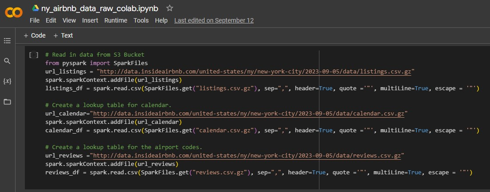
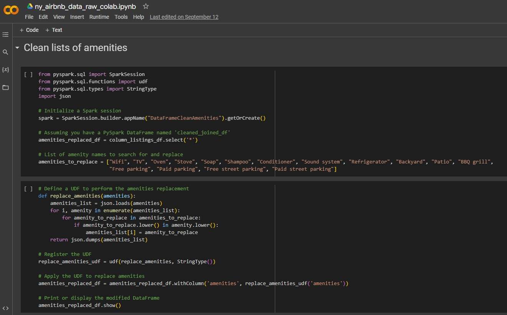
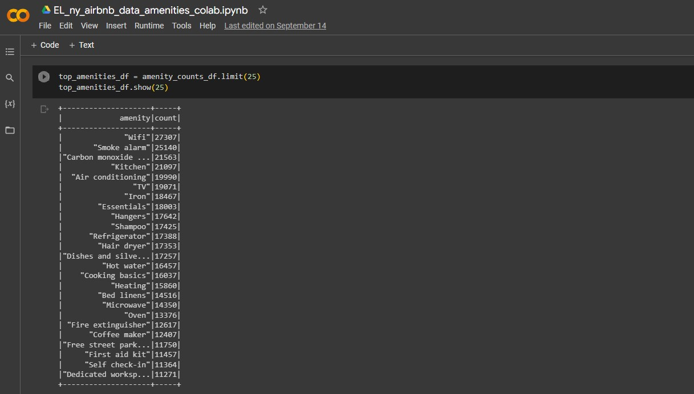
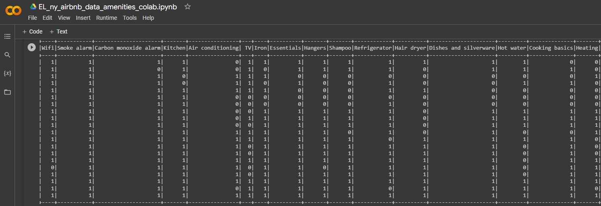

Google Colab: Reading and Cleaning Our Data
(1) We used PySpark within Google Colab to read our data directly from the source URL.

(2) We completed cleaning our initial data within PySpark as well, including within the amenities arrays.

(3) Our final step was to count the top 25 most listed amenities, and assigning binaries in new columns to each of those amenities.

